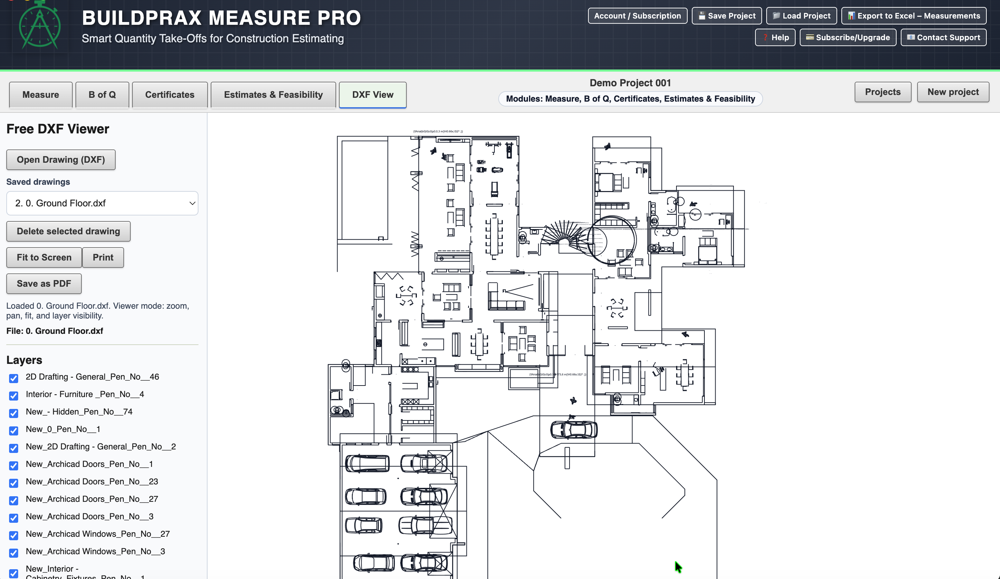

Layer-Based Viewing
Toggle and inspect DXF layers to isolate the information you need on each drawing.
DXF and PDF Measurement Workflows
Open DXF files quickly, inspect layers, and navigate drawings with smooth zoom and pan controls. Buildprax runs as a lightweight desktop DXF viewer on Windows and macOS.
Designed for practical construction workflows without the complexity of full CAD software.
If you searched for DXF viewer software, DXF file viewer, or how to open DXF drawings, this page focuses on the core viewing workflow. You can load drawings, check layer visibility, and inspect geometry before moving into measurement.
Used by Quantity Surveyors, Estimators, Contractors and Construction Professionals.
Toggle and inspect DXF layers to isolate the information you need on each drawing.
Use practical zoom and pan behavior to move through details and large plan areas quickly.
Run a lightweight desktop workflow that remains usable in busy construction office environments.

Once your DXF is open and reviewed, you can save or export the drawing to PDF for sharing, review, or downstream workflows where teams rely on PDF documentation.
Buildprax also supports full PDF + DXF measurement workflows where quantities are linked into Bills of Quantities, estimates, and certificates.